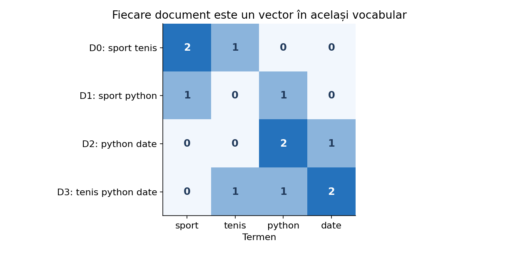
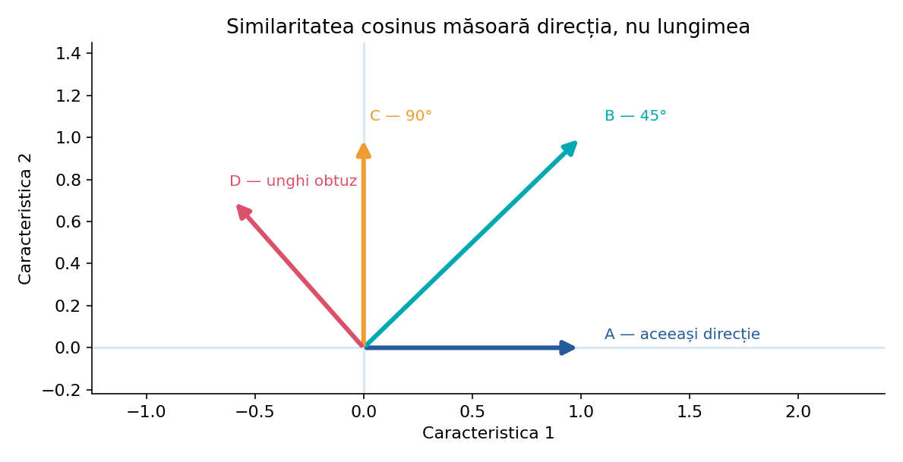
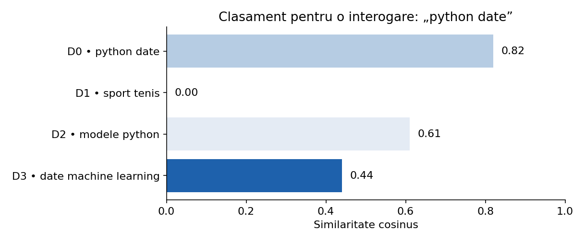
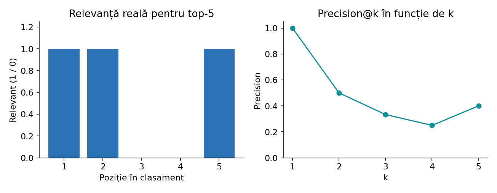

De la geometria vectorilor la un motor de căutare lexicală construit pas cu pas. Explicații pentru liceu, calcule manuale, cod Python de la zero și cu scikit-learn, interpretarea rezultatelor și limitele reale ale metodei.
Presupunem că avem 20.000 de materiale text și un elev caută „clasificarea imaginilor cu rețele neuronale”. Nu știm categoria exactă a fiecărui document și nu vrem un răspuns de tip sport/tehnologie, ci o listă ordonată cu cele mai relevante materiale. Aceasta este o problemă de regăsire a informației (information retrieval).
Un motor lexical nu compară direct propozițiile ca șiruri de caractere. Mai întâi construiește o reprezentare numerică a fiecărui document; apoi transformă interogarea prin aceleași reguli și calculează un scor de apropiere. Rezultatul este un clasament, nu o probabilitate de corectitudine.
D0: „rețele neurale pentru imagini”; D1: „clasificarea textelor cu Naive Bayes”; D2: „augmentarea imaginilor și CNN”. Pentru întrebarea „clasificarea imaginilor”, D0 și D2 sunt candidați buni. Trebuie însă să definim numeric ce înseamnă „apropiat”.
Fiecărui termen din vocabular îi asociem o coordonată. Astfel, pentru vocabularul [sport, tenis, python, date], documentul „python python date” poate deveni vectorul (0, 0, 2, 1). Alte documente sunt reprezentate în același sistem de coordonate, păstrând exact aceeași ordine a termenilor.
Produsul scalar dintre doi vectori se obține înmulțind coordonatele corespunzătoare și adunând rezultatele. Pentru a=(1,2) și b=(3,4), avem a·b = 1·3 + 2·4 = 11. Produsul scalar crește dacă vectorii împart coordonate importante, dar depinde și de lungimea lor.

Nu comparăm două documente folosind vocabularuri construite separat. Dimensiunea 0 trebuie să reprezinte același termen pentru toate documentele și interogările.
Comparați q=(1,1), a=(1,1) și b=(10,10). Produsul scalar este q·a=2, dar q·b=20, deși b are exact aceeași direcție ca a. Dacă dorim un scor influențat mai puțin de magnitudinea vectorilor, trebuie să normalizăm.
Norma euclidiană este lungimea vectorului: ||a|| = √(a₁²+...+aₙ²). Pentru q=(1,1), ||q||=√2. Pentru b=(10,10), ||b||=√200. Împărțind produsul scalar la produsul normelor, scorul devine 1 în ambele cazuri. Asta înseamnă că vectorii au aceeași direcție.

Pentru vectorii nenuli a și b, cos(a,b) = (a·b)/(||a||·||b||). În geometrie, aceasta este valoarea cosinusului unghiului dintre vectori. Pentru text, o interpretăm drept un scor de apropiere între reprezentări numerice.
Luați q=(1,0), A=(1,0), B=(1,1), C=(0,1). Obținem cos(q,A)=1, cos(q,B)=1/√2≈0,707, respectiv cos(q,C)=0. Primul document este perfect aliniat cu interogarea, al doilea împarte parțial termenii, iar al treilea nu are nicio componentă comună.
Dacă interogarea conține doar termeni necunoscuți din vocabular, reprezentarea sa poate fi vectorul nul. Formula matematică nu este definită pentru norma zero. Într-un motor didactic alegem explicit scorul 0 și afișăm mesajul „niciun termen cunoscut”, în loc să efectuăm împărțirea la zero.
Nu sunt același lucru. Similaritatea cosinus este mai mare pentru vectori orientați similar. Distanța cosinus folosită de multe API-uri este 1 − similaritate și este mai mică pentru vecini apropiați. Distanța euclidiană măsoară distanța geometrică între puncte, fără a ignora scala vectorilor.
Dacă vectorii sunt normalizați L2, distanța euclidiană și cosinusul sunt legate prin relația ||a−b||² = 2(1−cos(a,b)). Astfel, pentru vectori de normă 1, cele două criterii produc aceeași ordine a vecinilor, deși scorurile numerice nu sunt identice. Fără normalizare, ordinea se poate schimba.
Similaritatea cosinus nu este probabilitate, nu măsoară înțelegerea semantică și nu garantează că un document este relevant pentru om.
BoW înregistrează frecvențele cuvintelor. Dacă „document” apare în aproape toate textele, cuvântul contribuie puțin la distingerea unui material de altul. TF-IDF reduce ponderea termenilor foarte răspândiți în corpus și dă mai multă importanță celor care diferențiază documentele.
În scikit-learn, pentru un corpus cu N documente, IDF cu smoothing este idf(t) = ln((1+N)/(1+df(t)))+1. O pondere inițială este tf(t,d)·idf(t), urmată implicit de normalizare L2. Dacă un termen este prezent în fiecare document, idf-ul este 1 în această convenție, nu 0.
D0: „python date date”; D1: „python algoritmi”; D2: „sport tenis”. Pentru „python”, df=2; pentru „date”, df=1. Din formula de mai sus rezultă idf(python)=ln(4/3)+1≈1,288 și idf(date)=ln(4/2)+1≈1,693. Termenul „date” primește o pondere mai mare fiind mai rar în corpus.
TfidfVectorizer(norm="l2") produce implicit rânduri de normă 1 (când sunt nenule). În acest caz, linear_kernel(q, X) și cosine_similarity(q, X) dau aceleași scoruri. Pentru un corpus mare și sparse, produsul scalar direct este adesea o alegere potrivită.
Dacă alegem norm=None, vectorii nu mai au norma 1. Atunci linear_kernel returnează un produs scalar ne-normalizat, pe când cosine_similarity normalizează în timpul calculului. A le trata ca echivalente în această situație este o eroare.
Regula practică: norm="l2" → produsul scalar este cosinus. norm=None → nu. În ambele cazuri, vectorul interogării se obține prin transform, nu prin fit_transform.
Un motor lexical simplu separă două operații: indexarea, care se face pe corpus, și interogarea, care se repetă pentru fiecare întrebare nouă. La indexare definim vocabularul și IDF; la interogare păstrăm aceeași reprezentare.
fit_transform(corpus) o singură dată la indexare.vectorizer.transform([interogare]); nu reînvăța IDF-ul.
k controlează câte documente afișăm, nu câte folosim pentru învățarea TF-IDF. Alegerea k=3 poate fi potrivită pentru recomandări rapide; k=20 pentru o pagină de rezultate. Un prag minim de similaritate poate elimina documente evident neconectate lexical.
La egalitate de scor, stabilim explicit o regulă: ID crescător, data publicării sau ordine stabilă. Altfel, două rulări pot afișa ordini diferite pentru rezultate identice. Dacă toate scorurile sunt 0, nu prezentăm primul document drept „cel mai relevant”; spunem că potrivirea lexicală nu a identificat termeni comuni.
În căutare nu folosim predict() ca la clasificare. Algoritmul întoarce o listă de rezultate și scoruri, nu o categorie.
Interogarea „nu recomand” este diferită de „recomand”. Dacă folosim doar unigrame, două texte pot împărți termenul „recomand”, chiar dacă unul exprimă negația. Prin ngram_range=(1,2) introducem și caracteristica „nu recomand”, care poate diferenția mai bine expresiile. Costul este un vocabular mai mare și mai rar.
În mesaje cu greșeli, coduri de produs și forme variate („programare”, „programrae”), analyzer="char_wb" cu n-grame de 3–5 caractere poate avea rezultate mai robuste la variații ortografice. Însă similitudinea pe caractere poate apropia și texte fără legătură semantică; rezultatul trebuie validat.
Documente curate, mai lungi: analyzer="word", ngram_range=(1,2) ca experiment. Mesaje scurte și zgomotoase: compară cu char_wb. Corpus mic: păstrează min_df=1. Corpus mare: testează praguri pentru termenii foarte rari sau foarte frecvenți fără a elimina automat termeni relevanți.
min_df elimină termenii care apar în prea puține documente; poate reduce zgomotul din corpusuri mari, dar poate șterge exact numele rare pe care utilizatorul le caută. max_df elimină termenii foarte răspândiți; este util uneori pentru cuvinte de legătură sau marcaje omniprezente, dar poate elimina termeni de domeniu.
max_features limitează dimensiunea vocabularului. Este o măsură practică pentru memorie și viteză, dar poate rata termenii specializați. Într-un sistem de căutare după numere de modele, termeni rari sau coduri de produs, astfel de filtrări trebuie aplicate cu mare atenție.
Parametrii de vectorizare se aleg în corelație cu sarcina: un clasificator poate tolera eliminarea termenilor foarte rari; un motor care caută nume proprii rare poate avea nevoie să îi păstreze.
binary=True în TfidfVectorizer tratează frecvența termenilor ca prezență/absență înainte de ponderarea TF-IDF. Este util când repetiția este mai degrabă zgomot: de exemplu, titluri scurte sau mesaje cu repetări artificiale. use_idf=False elimină ponderarea IDF și permite compararea cu TF normalizat.
sublinear_tf=True aplică formula 1+ln(tf) pentru frecvențe pozitive: repetiția contează, dar crește mai lent. Este util pentru documente cu lungimi foarte diferite. norm="l2" ajută la compararea direcției; norm=None păstrează magnitudinea, dar atunci produsul scalar nu mai este cosinus.
Documentul A repetă „python” de 20 de ori, iar B îl menționează o singură dată alături de alte informații relevante. Cu TF simplu, repetiția poate domina. Cu sublinear_tf=True și normalizare L2, acest avantaj este redus. Nu este o regulă universală: testează configurațiile pe întrebări reale cu relevanță cunoscută.
NearestNeighbors(metric="cosine") permite interogarea vecinilor după distanță, nu după similaritate. Dacă metoda returnează d=0,2, similaritatea cosinus corespunzătoare este 0,8. Pentru vectori TF-IDF sparse, implementarea folosește căutare brute force chiar dacă algorithm="auto".
Este un API bun pentru căutări top-k și experimente cu distanțe alternative. Pentru a înțelege matematica, începe însă cu cosine_similarity pe un corpus mic, unde poți vedea vectorii și scorurile.
Atenție la opțiunile n_neighbors, metric și algorithm. leaf_size contează pentru algoritmii pe arbori, nu pentru o căutare brute force pe TF-IDF sparse.
În loc de o interogare nouă putem compara toate documentele între ele. Astfel construim o matrice S de dimensiune N×N unde S[i,j] exprimă similaritatea documentelor i și j. Diagonala este 1 pentru fiecare vector nenul normalizat. Matricea este simetrică.
Aplicație: pe o pagină de curs, sub o lecție despre regresia logistică putem sugera automat materiale apropiate lexical. Trebuie să excludem documentul însuși și, când este cazul, versiuni aproape identice.
Memoria pentru matricea N×N crește cu N². La N=100.000 documente, nu este indicat să construim întreaga matrice densă. Calculăm scorurile doar pentru interogarea curentă sau în blocuri.
Două documente pot avea cosinus foarte mare pentru că sunt copii ușor modificate, dar și pentru că discută aceeași temă folosind multe cuvinte comune. De aceea un prag precum 0,90 nu este o regulă universală de deduplicare. Trebuie stabilit pe perechi etichetate „duplicat / nu duplicat”.
Pentru deduplicare exactă putem folosi hashul textului normalizat. Pentru aproape-duplicate putem compara cosine TF-IDF, n-grame de caractere sau alte metode, apoi analiza manual perechile cu scoruri ridicate. În datele ONIA, două fișiere aproape identice în train și validation pot produce scoruri supraoptimiste.
„Ghid Python pentru începători” și „Ghid Python pentru începători — ediția revizuită” sunt probabil aproape-duplicate. „Ghid Python pentru analiză de date” și „Python pentru rețele neuronale” pot avea cosinus relativ mare, dar nu sunt același document. Validăm pragul cu exemple de ambele tipuri.
TF-IDF măsoară suprapunerea termenilor, nu înțelege automat sinonimele, parafrazele sau relațiile dintre concepte. „automobil” și „mașină” pot fi apropiate semantic, dar dacă nu împart tokeni, scorul poate fi zero. Nici „nu este sigur” și „este sigur” nu devin automat opuse; ambele conțin termenul „sigur”.
Avem câteva remedii graduale: normalizare și lematizare, n-grame, extinderea controlată a interogării cu sinonime, filtre pe metadate și, dacă problema o cere, reprezentări semantice dense. Sistemele hibride combină rezultate lexicale cu altele semantice, dar aceasta este o etapă ulterioară.
Un baseline TF-IDF este adesea un punct de pornire excelent: rapid, transparent, ușor de evaluat și uneori surprinzător de puternic. Nu renunțăm la el doar pentru că există modele mai complexe.
Pentru fiecare interogare avem nevoie de un set de documente considerate relevante. Precision@k este fracția documentelor relevante din primele k rezultate. Recall@k este fracția tuturor documentelor relevante care apar în primele k rezultate. Dacă trei din primele cinci sunt relevante și există șase relevante în total, Precision@5=3/5=0,60, iar Recall@5=3/6=0,50.
Reciprocal Rank este 1/r, unde r este poziția primului rezultat relevant; media pe interogări este MRR. Average Precision (AP) recompensează ordonarea bună a tuturor rezultatelor relevante; nDCG ține cont și de grade de relevanță (de exemplu, 0, 1, 2). Metricile trebuie alese după cerința concursului și tipul utilizatorului.

Pentru alegerea parametrilor păstrează un set de interogări de validare cu evaluări umane și nu optimiza la nesfârșit pe testul ascuns sau scorul public.
Matricea TF-IDF are foarte multe elemente zero, deci este păstrată de obicei în format CSR. Nu folosi toarray() fără motiv pe un corpus mare: transformarea în matrice densă poate consuma foarte multă memorie. Pentru un singur query, înmulțirea dintre vectorul său și transpunerea matricei documentelor este eficientă.
Pentru volume mari sau latență mică, sistemele reale folosesc indexuri inversate, procesare în loturi, caching ori căutare aproximativă pentru vectori densi. În această lecție păstrăm implementările exacte și transparente, potrivite pentru învățare și proiecte ONIA de dimensiune mică sau medie.
Într-un sistem folosit de elevi, mai important decât o optimizare prematură este să nu pierzi alinierea între rândurile matricei, ID-urile documentelor și textele afișate.
Construim un index pentru fișiere cu câmpurile id, titlu, text și categorie. Interogarea unui elev poate fi „regresie logistică multiclasă” sau „cum alegem numărul de clustere”. Rezultatul va conține primele k documente și scorurile lor.
Facem trei experimente comparabile: (A) unigrame, (B) unigrame+bigrame, (C) n-grame de caractere. Separat evaluăm dacă o filtrare pe categorie îmbunătățește rezultatele pentru un set mic de interogări etichetate manual.
□ indexare cu fit_transform • □ query cu transform • □ tratarea vectorului nul • □ top-k stabil • □ ID-uri consecvente • □ verificare manuală a rezultatelor • □ Precision@k / MRR pe query-uri cu relevanță cunoscută • □ compararea configurațiilor pe aceeași validare.
Exemplele sunt independente și pot fi copiate direct. Începem cu liste și funcții simple, apoi folosim reprezentări sparse și API-uri specializate. În fiecare exemplu este indicat ce componentă matematică se implementează.
Separăm cele două componente ale formulei. Astfel putem verifica manual fiecare termen înainte de a calcula cosinusul.
import math def produs_scalar(a, b): return sum(x * y for x, y in zip(a, b)) def norma(a): return math.sqrt(sum(x * x for x in a)) q = [1, 0] a = [1, 1] print("produs scalar:", produs_scalar(q, a)) print("norma q:", norma(q)) print("norma a:", norma(a))
Cazul cu vector nul nu are cosinus matematic definit; funcția întoarce 0 ca regulă operațională documentată.
import math def cosinus(a, b): if len(a) != len(b): raise ValueError("Vectorii au dimensiuni diferite") prod = sum(x * y for x, y in zip(a, b)) na = math.sqrt(sum(x * x for x in a)) nb = math.sqrt(sum(y * y for y in b)) if na == 0 or nb == 0: return 0.0 # convenție pentru motorul de căutare return prod / (na * nb) for a in ([1, 0], [1, 1], [0, 1], [0, 0]): print(a, round(cosinus([1, 0], a), 3))
În exerciții folosim texte simple fără punctuație. Pentru un corpus real, tokenizarea trebuie tratată riguros.
from collections import Counter def tokenizeaza(text): return text.casefold().split() documente = ["python date date", "python algoritmi", "sport tenis"] vocabular = sorted({w for doc in documente for w in tokenizeaza(doc)}) for doc in documente: frecvente = Counter(tokenizeaza(doc)) vector = [frecvente.get(termen, 0) for termen in vocabular] print(doc, "->", vector) print("Vocabular:", vocabular)
Exemplul reproduce pașii de bază pentru smooth_idf=True, sublinear_tf=False și norm="l2".
import math from collections import Counter docs = ["python date date", "python algoritmi", "sport tenis"] tokens = [doc.split() for doc in docs] vocab = sorted({w for doc in tokens for w in doc}) N = len(docs) df = {w: sum(w in doc for doc in tokens) for w in vocab} idf = {w: math.log((1 + N) / (1 + df[w])) + 1 for w in vocab} for doc in tokens: count = Counter(doc) brut = [count.get(w, 0) * idf[w] for w in vocab] norma = math.sqrt(sum(x * x for x in brut)) normalizat = [x / norma if norma else 0 for x in brut] print([round(x, 3) for x in normalizat]) print("IDF:", {w: round(v, 3) for w, v in idf.items()})
Acesta este un motor complet la scară mică: vocabular comun, IDF din corpus, normalizare, scoruri și clasament.
import math from collections import Counter docs = ["python date", "sport tenis", "modele python date", "algoritm python"] query = "python date" corpus = [doc.split() for doc in docs] vocab = sorted({w for tokens in corpus for w in tokens}) N = len(docs) idf = {w: math.log((1 + N) / (1 + sum(w in d for d in corpus))) + 1 for w in vocab} def vectorizeaza(text): tf = Counter(text.split()) v = [tf.get(w, 0) * idf[w] for w in vocab] norm = math.sqrt(sum(x * x for x in v)) return [x / norm if norm else 0.0 for x in v] q = vectorizeaza(query) scoruri = [sum(x*y for x, y in zip(q, vectorizeaza(doc))) for doc in docs] for i in sorted(range(N), key=lambda i: (-scoruri[i], i))[:3]: print(i, round(scoruri[i], 3), docs[i])
cosine_similarity(X, Y) întoarce o matrice cu un rând pentru fiecare query și o coloană pentru fiecare document.
import numpy as np from sklearn.metrics.pairwise import cosine_similarity a = np.array([[1., 1.], [1., 0.], [0., 0.]]) q = np.array([[1., 0.]]) print(cosine_similarity(q, a).round(3))
Acesta este tiparul de lucru recomandat pentru majoritatea exemplelor ONIA bazate pe TF-IDF.
from sklearn.feature_extraction.text import TfidfVectorizer from sklearn.metrics.pairwise import cosine_similarity corpus = ["python date", "sport tenis", "modele python pentru date"] vectorizer = TfidfVectorizer(norm="l2", ngram_range=(1, 2)) index = vectorizer.fit_transform(corpus) interogare = "python și date" q = vectorizer.transform([interogare]) # fără fit_transform! scoruri = cosine_similarity(q, index).ravel() for i in sorted(range(len(corpus)), key=lambda i: (-scoruri[i], i)): print(i, round(float(scoruri[i]), 3), corpus[i])
Prima comparație întoarce True, iar a doua evidențiază că produsul scalar ne-normalizat poate avea alte valori.
import numpy as np from sklearn.feature_extraction.text import TfidfVectorizer from sklearn.metrics.pairwise import cosine_similarity, linear_kernel corpus = ["python date", "date algoritmi", "fotbal sport"] v = TfidfVectorizer(norm="l2") X = v.fit_transform(corpus) q = v.transform(["python date"]) print(np.allclose(cosine_similarity(q, X), linear_kernel(q, X))) v2 = TfidfVectorizer(norm=None) X2 = v2.fit_transform(corpus) q2 = v2.transform(["python date"]) print(cosine_similarity(q2, X2).round(3)) print(linear_kernel(q2, X2).round(3))
Pragul este o alegere a aplicației, nu un parametru al cosinusului. Dacă nimic nu depășește pragul, afișăm un mesaj în locul unui rezultat irelevant.
from sklearn.feature_extraction.text import TfidfVectorizer from sklearn.metrics.pairwise import cosine_similarity docs = ["python numpy pandas", "matplotlib grafice", "fotbal sport", "python scikit learn"] v = TfidfVectorizer() X = v.fit_transform(docs) q = v.transform(["python date numpy"]) scoruri = cosine_similarity(q, X).ravel() k, prag = 3, 0.05 ranking = sorted(range(len(docs)), key=lambda i: (-scoruri[i], i)) for i in [i for i in ranking if scoruri[i] >= prag][:k]: print(f"D{i} scor={scoruri[i]:.3f} | {docs[i]}")
kneighbors returnează distanțe și indici. Valorile 1-d sunt scorurile de similaritate cosinus.
from sklearn.feature_extraction.text import TfidfVectorizer from sklearn.neighbors import NearestNeighbors corpus = ["python numpy", "sport tenis", "python pandas date", "fotbal stadion"] v = TfidfVectorizer() X = v.fit_transform(corpus) model = NearestNeighbors(n_neighbors=2, metric="cosine", algorithm="brute") model.fit(X) q = v.transform(["python date"]) distante, indici = model.kneighbors(q) for d, i in zip(distante[0], indici[0]): print(i, f"cosinus={1 - d:.3f}", corpus[i])
Problema cu greșelile de tastare este un exemplu în care n-gramele de caractere pot fi mai robuste decât potrivirea lexicală exactă.
from sklearn.feature_extraction.text import TfidfVectorizer from sklearn.metrics.pairwise import cosine_similarity corpus = ["programare python", "progrmare în python", "analiză statistică", "python algoritmi"] q = "programare" configuratii = { "cuvinte": dict(analyzer="word", ngram_range=(1, 2)), "caractere": dict(analyzer="char_wb", ngram_range=(3, 5)) } for nume, params in configuratii.items(): v = TfidfVectorizer(**params) X = v.fit_transform(corpus) scoruri = cosine_similarity(v.transform([q]), X).ravel() print(nume, [(i, round(float(scoruri[i]), 3)) for i in scoruri.argsort()[::-1]])
Acest test izolează efectul sublinearizării frecvenței, păstrând aceeași colecție și aceeași interogare.
from sklearn.feature_extraction.text import TfidfVectorizer from sklearn.metrics.pairwise import cosine_similarity corpus = ["python " * 20 + "date", "python date date algoritmi", "sport tenis"] for sublinear in (False, True): v = TfidfVectorizer(sublinear_tf=sublinear) X = v.fit_transform(corpus) q = v.transform(["python date"]) print(sublinear, cosine_similarity(q, X).ravel().round(3))
Exclude documentul însuși; altfel primul rezultat va fi aproape întotdeauna chiar acel document.
from sklearn.feature_extraction.text import TfidfVectorizer from sklearn.metrics.pairwise import linear_kernel docs = ["regresie logistică clasificare", "arbori clasificare", "regresie liniară", "analiză de date"] X = TfidfVectorizer().fit_transform(docs) S = linear_kernel(X, X) i = 0 vecini = [j for j in range(len(docs)) if j != i] for j in sorted(vecini, key=lambda j: -S[i, j])[:2]: print(f"{S[i, j]:.3f}", docs[j])
Pragul nu garantează că perechile sunt duplicate; doar identifică acele perechi care merită verificate.
from sklearn.feature_extraction.text import TfidfVectorizer from sklearn.metrics.pairwise import cosine_similarity texte = [ "ghid python pentru începători", "ghid python pentru începători ediție nouă", "introducere în algoritmi de grafuri", "ghid complet python pentru începători" ] X = TfidfVectorizer(analyzer="char_wb", ngram_range=(3, 5)).fit_transform(texte) S = cosine_similarity(X) prag = 0.60 # doar pentru demonstrație, trebuie validat for i in range(len(texte)): for j in range(i + 1, len(texte)): if S[i, j] >= prag: print(i, j, round(S[i, j], 3))
Un query fără rezultat relevant în top returnează Reciprocal Rank 0. Pentru evaluare reală, trebuie să avem documente relevante adnotate în prealabil.
# fiecare listă conține ID-urile rezultatelor întoarse pentru o interogare rezultate = [[1, 5, 3, 4], [4, 2, 0, 1], [2, 0, 1, 4]] relevante = [{1, 3, 6}, {2}, {7}] def precision_at_k(ranking, gold, k): return sum(i in gold for i in ranking[:k]) / k def recall_at_k(ranking, gold, k): return sum(i in gold for i in ranking[:k]) / len(gold) if gold else 0.0 def reciprocal_rank(ranking, gold): return next((1 / poz for poz, i in enumerate(ranking, 1) if i in gold), 0.0) for r, gold in zip(rezultate, relevante): print(round(precision_at_k(r, gold, 3), 3), round(recall_at_k(r, gold, 3), 3), round(reciprocal_rank(r, gold), 3)) print("MRR:", sum(reciprocal_rank(r, g) for r, g in zip(rezultate, relevante)) / len(rezultate))
Un document „foarte util” primește câștig mai mare. nDCG penalizează atunci când documentele cu relevanță mare sunt plasate prea jos.
import math # gradele de relevanță în ordinea clasamentului: 0=irelevant, 1=util, 2=foarte util grade = [2, 0, 1, 2, 0] def dcg(ranking): return sum((2 ** rel - 1) / math.log2(i + 2) for i, rel in enumerate(ranking)) ideal = sorted(grade, reverse=True) ndcg = dcg(grade) / dcg(ideal) if dcg(ideal) else 0.0 print("DCG:", round(dcg(grade), 3)) print("nDCG:", round(ndcg, 3))
joblib este potrivit pentru fișiere de model de încredere, nu pentru încărcarea unor fișiere necunoscute din internet. Păstrează și metadata/documentele în aceeași ordine.
from pathlib import Path import json from joblib import dump, load from sklearn.feature_extraction.text import TfidfVectorizer out = Path("index_cautare") out.mkdir(exist_ok=True) iduri = ["lec-01", "lec-02", "lec-03"] texte = ["clasificare cu svm", "regresie liniară", "rețele neurale"] vectorizer = TfidfVectorizer() X = vectorizer.fit_transform(texte) dump(vectorizer, out / "vectorizer.joblib") dump(X, out / "index.joblib") (out / "documente.json").write_text( json.dumps([{"id": i, "text": t} for i, t in zip(iduri, texte)], ensure_ascii=False), encoding="utf-8" ) print(load(out / "index.joblib").shape)
Uneori criteriile de filtrare sunt la fel de importante ca asemănarea lexicală. Filtrarea se face pe metadate, nu prin speranța că modelul va înțelege singur categoria.
from sklearn.feature_extraction.text import TfidfVectorizer from sklearn.metrics.pairwise import cosine_similarity date = [ {"id": 101, "categorie": "ML", "text": "regresie logistică clasificare"}, {"id": 102, "categorie": "NLP", "text": "clasificarea textelor cu tf idf"}, {"id": 103, "categorie": "ML", "text": "arbori de decizie clasificare"}, {"id": 104, "categorie": "NLP", "text": "lemmatizare și tokenizare text"} ] v = TfidfVectorizer(ngram_range=(1, 2)) X = v.fit_transform([d["text"] for d in date]) scoruri = cosine_similarity(v.transform(["clasificare" ]), X).ravel() rez = [i for i, d in enumerate(date) if d["categorie"] == "NLP"] rez.sort(key=lambda i: (-scoruri[i], date[i]["id"])) for i in rez: print(date[i]["id"], round(float(scoruri[i]), 3), date[i]["text"])
La fiecare interogare nouă. Vocabularul și IDF rămân cele învățate din corpus.
Înseamnă lipsă de suprapunere în reprezentarea aleasă; semantica poate fi totuși apropiată.
Nu. Este o similaritate geometrică între vectori.
Într-o evaluare corectă a unui model antrenat pe train, vectorizarea trebuie învățată pe train și aplicată pe validation/test.
Pentru că documentul însuși ar domina trivial lista de vecini.
Când N este mare și consumul de memorie devine prohibitiv; calculezi pe interogare sau în loturi.
scikit-learn — Similaritatea cosinus · TfidfVectorizer · NearestNeighbors · Introduction to Information Retrieval (Manning et al.).
Graficele sunt originale, construite cu date educaționale. Codul este orientat spre înțelegerea algoritmilor și este însoțit de verificări experimentale.